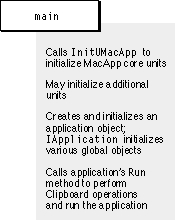

Overview
A user can launch a MacApp application in the usual ways: by double-clicking the application icon, by double-clicking a document icon that belongs to the application, by selecting the application and choosing Open from the file menu, and so on. Another application or script can also open the application by sending an Open Application event that specifies the application.When the operating system launches a MacApp application, it passes control to the application's
mainroutine, which must be supplied by the developer. Themainroutine will vary from application to application, but it should always perform these operations:Figure 4-1 shows these steps.
- Call
InitUMacAppto initialize MacApp's core units.- Initialize any additional MacApp units the application requires that aren't part of MacApp's core features.
- Initialize additional application units, if any are required.
- Create and initialize an application object, then call its
Runmethod to run the application, which then continually receives and dispatches events until it is terminated.Each of the sample applications distributed with MacApp provides an example of a
mainroutine. Themainroutine from the Calc application shows a startup screen when the application is launched. Themainroutine from the IconEdit application demonstrates the basic steps.void main() { InitUMacApp(4);// Initialize MacApp with 4 calls to MoreMasters. InitUPrinting(); TIconEditApplication* anIconEditApplication = new TIconEditApplication; anIconEditApplication->IIconEditApplication(); anIconEditApplication->Run(); }The remainder of this chapter describes MacApp's facilities for initializing, running, and terminating an application.Figure 4-1 Initializing and running a MacApp application from the
mainroutine